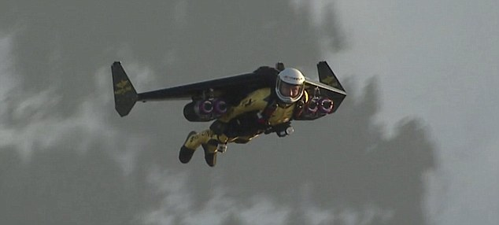

A man ouside with a wing suit he was trying to open the door with a crowbar
. both were holding the dor that he cant open the dor. But than the man opent the dor and the pilot flue out of the dor. ON the street there was a woman driving in the audi car, the pilot was faling on the car the pilot was emediatly deat the woman also. The police was comming and knew that there was something wrong, they looked in to the sky and saw the plane with out the dor.They caled the millitar and told them that there was a plne in a emergency.
The millitar said the woud come. Mean wile the plane was in big troubl travis and the man were fighting, the only problem for the man was he coud not enter in the plane because the wings from the suid were stuckt out side of the plane. They were fighting for more than 1 hour in the palne. Luckely the plane had the autopilot on so it coud fly alone. But than travis was getting his crowbar and than he was stucking it in his leg. The man emediatly flue out with out controll and he flue inside the engine and died in 1 second. travis was happy and wanted to land the plane in a save place. 